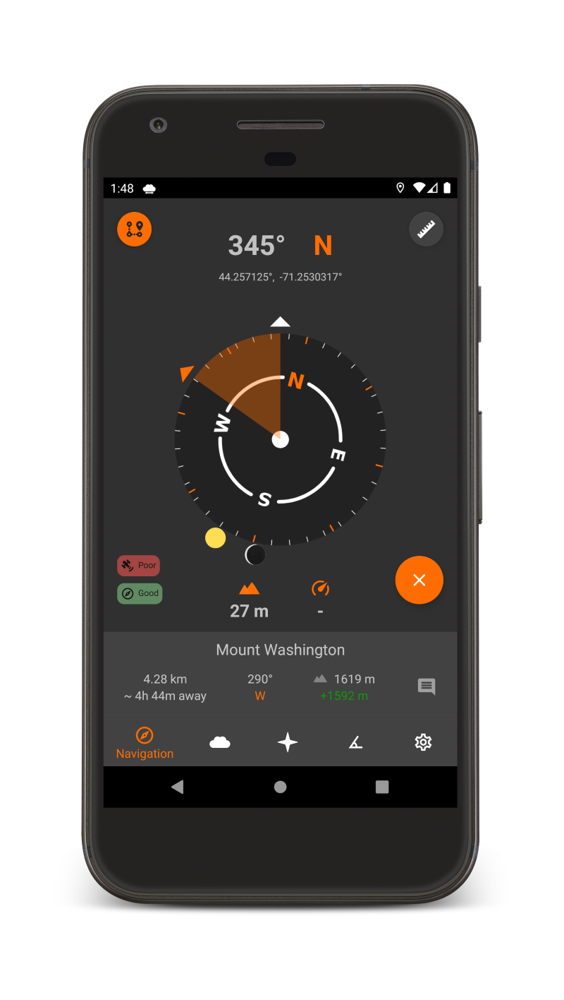

Trail Sense
Explore beyond the reaches of the Internet.

Explore beyond the reaches of the Internet.
Place beacons and navigate back to them.

View nearby beacons on your compass.

Trace back your steps.
Get hyperlocal weather forecasts and alerts.
View the positions of the sun and moon.
Flashlight, inclinometer, ruler, clock, level, and more!
Any information gathered by this application does not leave your device (as a matter of fact, this app doesn't use the Internet at all).
View Privacy PolicyTrail Sense is a tool that can be used in a survival situation, but you should not rely solely upon it. Please validate it's accuracy, avoid dangerous situations when possible, stay calm, and use common sense.